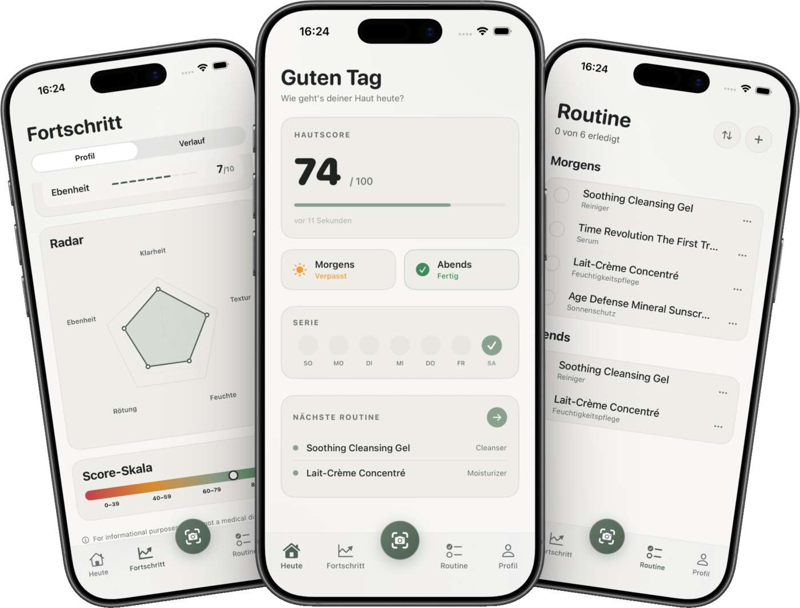
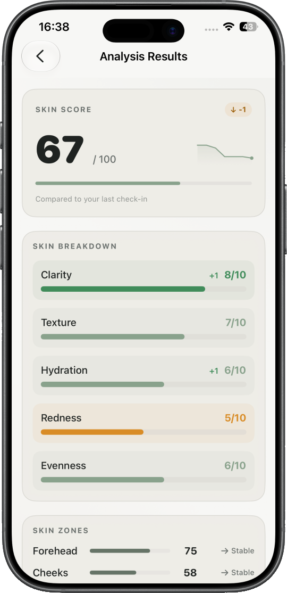
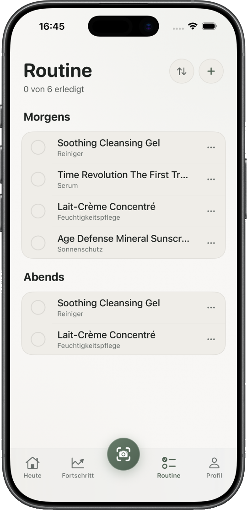
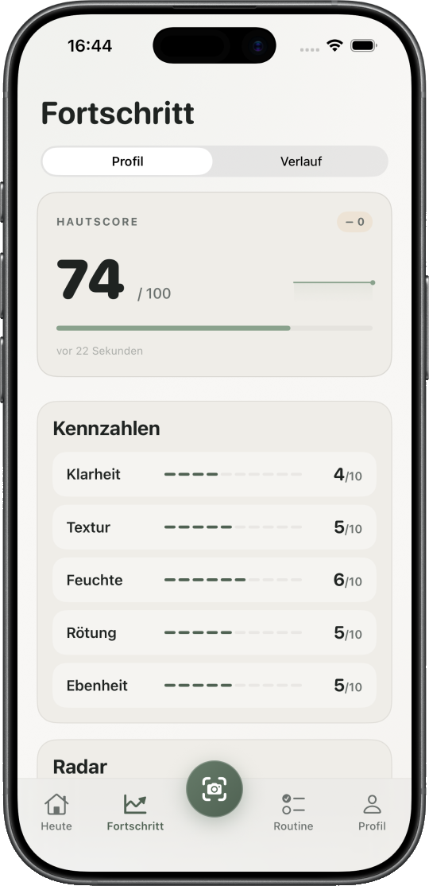

Lokal verschlüsselt
Dein Verlauf und deine Routine liegen verschlüsselt auf deinem iPhone. Ohne Konto.
Deine Haut verstehen. Deine Routine verbessern.

Foto machen, KI-Analyse erhalten und Veränderungen über Wochen verfolgen.

Nach jedem Check-in bekommst du deinen Skin-Score und die Kennzahlen zu Klarheit, Textur, Feuchtigkeit, Rötung und Ebenheit.Hautscore und fünf Kennzahlen nach jedem Scan.

Morgens und abends: Reiniger, Serum, Feuchtigkeitspflege und Sonnenschutz — alles an einem Ort. Hake erledigte Schritte ab.Deine Produkte und Pflegeschritte. Morgens und abends.

Hautscore, Kennzahlen und Radar-Chart zeigen dir, wie sich deine Haut entwickelt. Vergleiche deine Check-ins und erkenne Trends.Vergleiche deine Scans über Wochen.
Deine Hautdaten sind persönlich. So gehen wir damit um.
Dein Verlauf und deine Routine liegen verschlüsselt auf deinem iPhone. Ohne Konto.
Für die KI-Analyse gehen dein Foto und relevante Profilangaben mit deiner Zustimmung an Google Gemini.
Du kannst deine lokalen Daten jederzeit löschen. Ein Textexport ist mit Premium möglich.
Kein Werbe-Tracking und kein Weiterverkauf deiner Daten.
„Ich checke meine Haut jetzt jeden Abend — der Skin-Score ist wie ein kleines Spiel, das mich motiviert dranzubleiben."
„Das Spot-Tracking hat mir gezeigt, dass mein Pickelmal wirklich langsam verblasst. Ohne die App hätte ich das nie so genau gesehen."
„Sehr durchdacht gemacht. Nur die Analyse dauert manchmal ein paar Sekunden länger, als ich erwartet hätte."
„Endlich eine App, die ehrlich sagt, was mit meinen Fotos passiert. Kein Konto, keine Werbung — genau mein Ding."
„Die Routine mit Morgens- und Abends-Schritten ist super übersichtlich. Endlich vergesse ich keinen Schritt mehr."
„Radar-Chart und Skin-Score zeigen mir Trends, die ich im Spiegel nie bemerkt hätte."
Nein. Du kannst Skinmetrics ohne Registrierung und ohne Login verwenden.
Du fotografierst deine Haut. Mit deiner Zustimmung werden das Foto und relevante Profilangaben von Google Gemini analysiert. Das Ergebnis kannst du anschließend in der App ansehen.
Der Hautscore fasst die KI-Einschätzung deiner Haut zusammen. Einzelne Kennzahlen und dein Verlauf helfen dir beim Vergleichen. Die Einschätzung kann ungenau sein und ist keine medizinische Messung.
Fotografiere möglichst immer bei ähnlichem Licht, aus derselben Entfernung und im gleichen Winkel. Vermeide Filter, starke Schatten und direktes Gegenlicht. Unterschiedliche Aufnahmebedingungen können das Ergebnis beeinflussen.
Für eine neue KI-Analyse ja: Das Foto wird an Google Gemini übermittelt. Deine bereits gespeicherten Verläufe und deine Routine liegen auf deinem iPhone.
Dein gespeicherter Fotoverlauf liegt lokal auf deinem iPhone. Ein iPhone-Backup kann auch diese App-Daten enthalten. Für eine KI-Analyse wird eine verkleinerte Kopie des jeweiligen Fotos an Google übertragen.
Neben dem Foto werden relevante Angaben aus deinem Profil übertragen, etwa Hauttyp, Hautziele, Routine und Angaben zu Allergien oder Erkrankungen. Das geschieht für die KI-Analyse. Details zum Datenschutz.
Aktuell gibt es keine iCloud- oder CloudKit-Synchronisation. Ein iPhone-Backup ist davon zu unterscheiden: Es kann deine lokal gespeicherten App-Daten sichern.
In den Einstellungen der App kannst du deine lokalen Daten löschen. Der Textexport ist eine Premium-Funktion. Er enthält unter anderem Scans, Check-ins und Routinedaten; er ist kein vollständiger Fotoexport.
Du kannst deine Produkte und Pflegeschritte für morgens und abends organisieren und erledigte Schritte abhaken.
Nein. Skinmetrics hilft dir, deine Haut zu beobachten, und ersetzt keine ärztliche Beratung, Diagnose oder Behandlung.